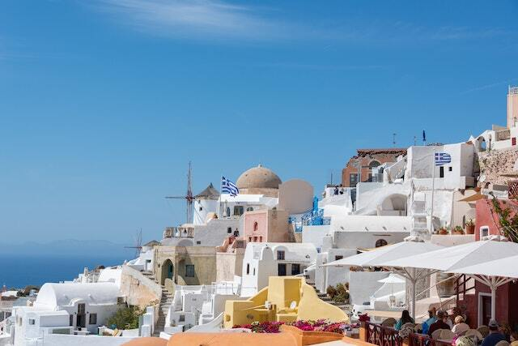

Último Viaje
Grecia, un país increíble, con gente super hospitalaria, paisajes increíbles y en donde, vayas a donde vayas, hay un pedacito de historia antigua. Te vamos a contar cuantos dias nos llevó recorrer los diferentes puntos que elegimos, donde nos hospedamos y que lugares visitamos. Chequeá la sección para saber más sobre Atenas, su capital, y algunas de sus hermosas islas.Ya podes ver nuestro último destino en la sección Nuestros Viajes.
